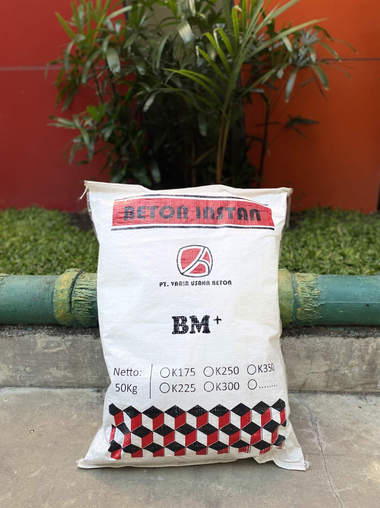

Beton Instan BM+
Informasi lengkap tentang produk Beton Instan BM+ dari PT Varia Usaha Beton.
Beton Instan BM+ merupakan produk terbaru dari Varia Usaha Beton yang dipergunakan untuk Pengecoran secara Instan, dengan komposisi material : Semen, Batu Pecah, Pasir yang dikemas dengan berat 50kg per Sak Untuk Daya sebar 1 m³ membutuhkan ± 43 sak. Terdapat 2 kemasan yang tersedia yaitu Kemasan 50 Kg dan juga tersedia Beton Instant jumbo Bag kemasan 1 Ton. Mutu yang tersedia yaitu : K-225, K-300, K-350.
Adapun Keunggulan dari produk Beton Instan BM+ sebagai berikut :
- MUTU, Terjamin dan konsisten
- PRAKTIS, Hanya perlu menambahkan air
- EFISIEN, Menekan jumlah material terbuang
- MUDAH, Dalam penyimpanan
- RAMAH LINGKUNGAN, Kebersihan proyek dapat terjaga
Proses pencampuran dapat dilakukan dengan langkah-langkah berikut :
- Aduk semua material kering hingga merata
- Setiap 1 zak beton instan membutuhkan 5-6 liter air
- Tambahkan air secara bertahap dan aduk hingga mencapai konsistens yang diinginkan (slump 12 ± 2cm)
- Beton instan siap untuk digunakan
Perhatian : Penambahan air harus dalam pengawasan untuk menjaga mutu beton.
Dengan adanya produk ini diharapkan menjadi solusi untuk Kawasan yang tidak bisa terjangkau dengan truck mixer.
Galeri Produk Beton Instant BM+
Berikut beberapa contoh visualisasi produk kami:
.png)
.jpeg)

